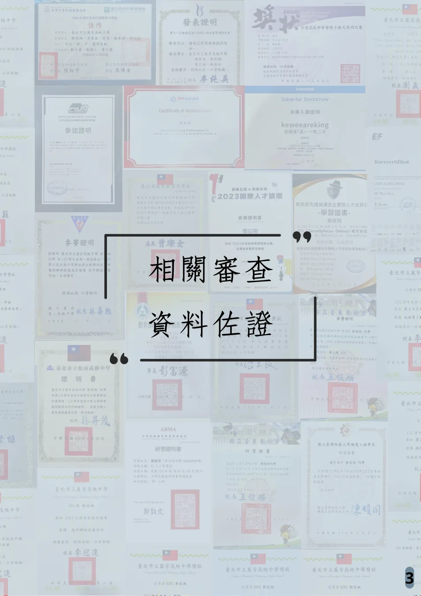
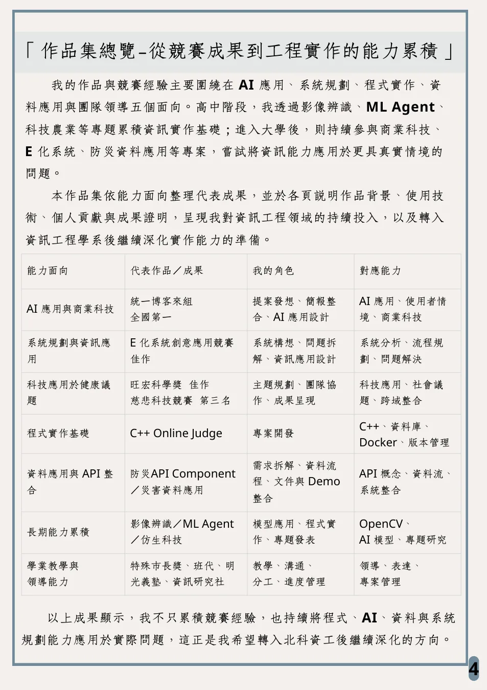
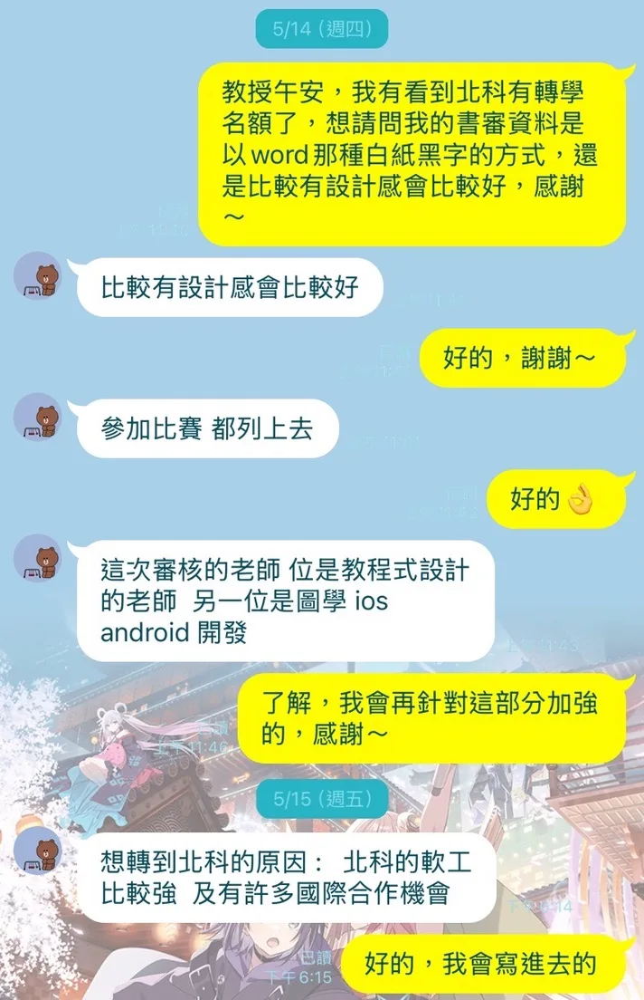

Awards & Evidence
重點佐證清單
- 統一超商關係企業商業競賽博客來組｜全國第一
- E 化系統創意應用競賽｜全國佳作
- ITA 智慧旅遊程式創意提案競賽｜決賽入選
- 防災積木元件創新賽｜決賽入選 / 進行中
- 慈悲科技競賽｜全國第三名
- 旺宏科學獎｜全國佳作
- 光宇盃全國高中職專題競賽｜全國佳作
- 全國高級中等學校小論文寫作比賽｜全國甲等
- 校內高中部程式設計競賽第一名、APCS 觀念 3 / 實作 3
- 資訊研究社社長 / 教學長、成果發表總召、班級代表

